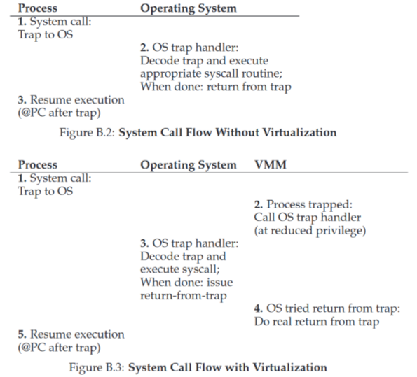
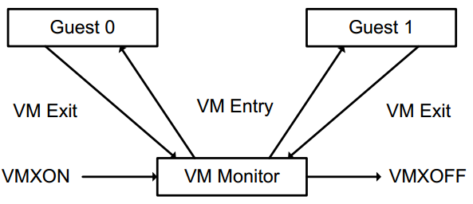
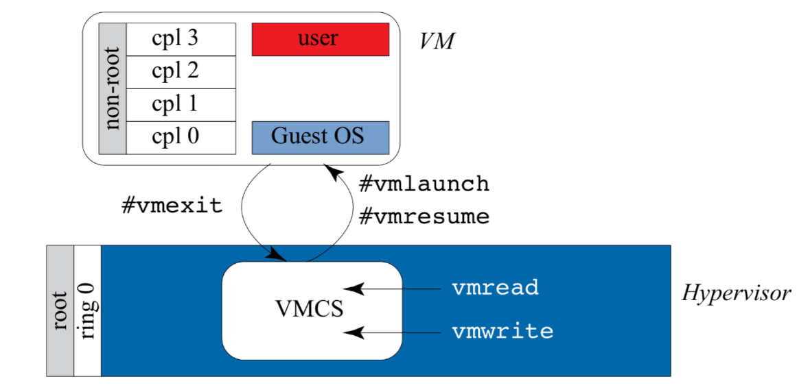
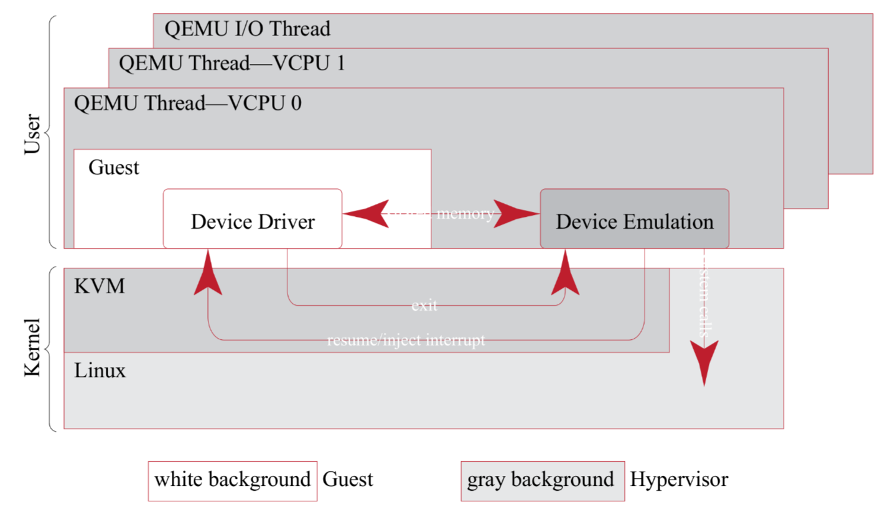
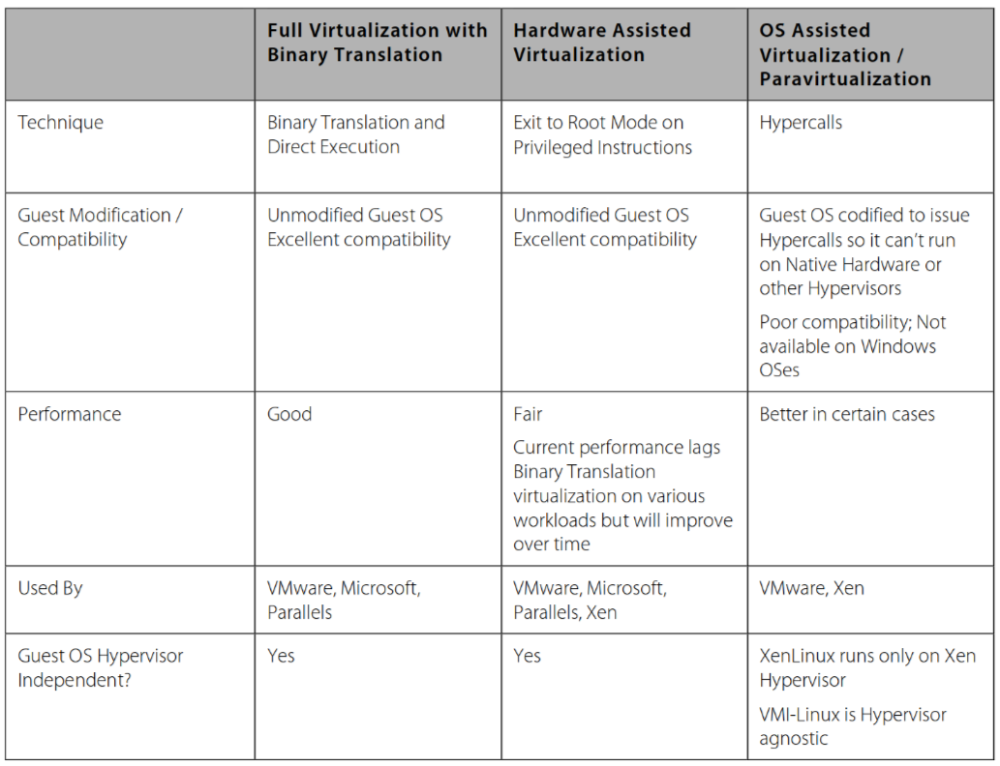

THE CRUX: HOW TO VIRTUALIZE THE MACHINE UNDERNEATH THE OS?
The virtual machine monitor must transparently virtualize the machine underneath the OS; what are the techniques required to do so?
Popek and Goldberg virtualization requirements
Sensentive Instructions
Control-sensitive
Update system state, e.g. change GDTR, direct access to PM, VMXON.
Behavior-senstive
Semeantics depends on the system state, e.g. visibility to IDT.
Popek and Goldberg First theorem
For any conventional third-generation computer, a virtual machine monitor may be constructed if the set of sensitive instructions for that computer is a subset of the set of privileged instructions.
Trap and Emulate

source: Operating Systems: Three Easy Pieces
VT-x
Virtual Machine Extensions
- Root/Non-root modes
- VM instructions
Life Cycle of VMM Software

source: Intel® 64 and IA-32 Architectures Software Developer Manuals
VMCS
What’s it?
A data structuwre which control the behavior of processor in VMX non-root mode and control VMX transitions. 
source: Hardware and Software Support for Virtualization
What’s in it?
KVM
Write your own hypervisor
source: Using the KVM API
/* Sample code for /dev/kvm API
*
* Copyright (c) 2015 Intel Corporation
* Author: Josh Triplett <josh@joshtriplett.org>
*
* Permission is hereby granted, free of charge, to any person obtaining a copy
* of this software and associated documentation files (the "Software"), to
* deal in the Software without restriction, including without limitation the
* rights to use, copy, modify, merge, publish, distribute, sublicense, and/or
* sell copies of the Software, and to permit persons to whom the Software is
* furnished to do so, subject to the following conditions:
*
* The above copyright notice and this permission notice shall be included in
* all copies or substantial portions of the Software.
*
* THE SOFTWARE IS PROVIDED "AS IS", WITHOUT WARRANTY OF ANY KIND, EXPRESS OR
* IMPLIED, INCLUDING BUT NOT LIMITED TO THE WARRANTIES OF MERCHANTABILITY,
* FITNESS FOR A PARTICULAR PURPOSE AND NONINFRINGEMENT. IN NO EVENT SHALL THE
* AUTHORS OR COPYRIGHT HOLDERS BE LIABLE FOR ANY CLAIM, DAMAGES OR OTHER
* LIABILITY, WHETHER IN AN ACTION OF CONTRACT, TORT OR OTHERWISE, ARISING
* FROM, OUT OF OR IN CONNECTION WITH THE SOFTWARE OR THE USE OR OTHER DEALINGS
* IN THE SOFTWARE.
*/
#include <err.h>
#include <fcntl.h>
#include <linux/kvm.h>
#include <stdint.h>
#include <stdio.h>
#include <stdlib.h>
#include <string.h>
#include <sys/ioctl.h>
#include <sys/mman.h>
#include <sys/stat.h>
#include <sys/types.h>
int main(void) {
int kvm, vmfd, vcpufd, ret;
const uint8_t code[] = {
0xba, 0xf8, 0x03, /* mov $0x3f8, %dx */
0x00, 0xd8, /* add %bl, %al */
0x04, '0', /* add $'0', %al */
0xee, /* out %al, (%dx) */
0xb0, '\n', /* mov $'\n', %al */
0xee, /* out %al, (%dx) */
0xf4, /* hlt */
};
uint8_t *mem;
struct kvm_sregs sregs;
size_t mmap_size;
struct kvm_run *run;
kvm = open("/dev/kvm", O_RDWR | O_CLOEXEC);
if (kvm == -1)
err(1, "/dev/kvm");
/* Make sure we have the stable version of the API */
ret = ioctl(kvm, KVM_GET_API_VERSION, NULL);
if (ret == -1)
err(1, "KVM_GET_API_VERSION");
if (ret != 12)
errx(1, "KVM_GET_API_VERSION %d, expected 12", ret);
vmfd = ioctl(kvm, KVM_CREATE_VM, (unsigned long)0);
if (vmfd == -1)
err(1, "KVM_CREATE_VM");
/* Allocate one aligned page of guest memory to hold the code. */
mem = mmap(NULL, 0x1000, PROT_READ | PROT_WRITE, MAP_SHARED | MAP_ANONYMOUS,
-1, 0);
if (!mem)
err(1, "allocating guest memory");
memcpy(mem, code, sizeof(code));
/* Map it to the second page frame (to avoid the real-mode IDT at 0). */
struct kvm_userspace_memory_region region = {
.slot = 0,
.guest_phys_addr = 0x1000,
.memory_size = 0x1000,
.userspace_addr = (uint64_t)mem,
};
ret = ioctl(vmfd, KVM_SET_USER_MEMORY_REGION, ®ion);
if (ret == -1)
err(1, "KVM_SET_USER_MEMORY_REGION");
vcpufd = ioctl(vmfd, KVM_CREATE_VCPU, (unsigned long)0);
if (vcpufd == -1)
err(1, "KVM_CREATE_VCPU");
/* Map the shared kvm_run structure and following data. */
ret = ioctl(kvm, KVM_GET_VCPU_MMAP_SIZE, NULL);
if (ret == -1)
err(1, "KVM_GET_VCPU_MMAP_SIZE");
mmap_size = ret;
if (mmap_size < sizeof(*run))
errx(1, "KVM_GET_VCPU_MMAP_SIZE unexpectedly small");
run = mmap(NULL, mmap_size, PROT_READ | PROT_WRITE, MAP_SHARED, vcpufd, 0);
if (!run)
err(1, "mmap vcpu");
/* Initialize CS to point at 0, via a read-modify-write of sregs. */
ret = ioctl(vcpufd, KVM_GET_SREGS, &sregs);
if (ret == -1)
err(1, "KVM_GET_SREGS");
sregs.cs.base = 0;
sregs.cs.selector = 0;
ret = ioctl(vcpufd, KVM_SET_SREGS, &sregs);
if (ret == -1)
err(1, "KVM_SET_SREGS");
/* Initialize registers: instruction pointer for our code, addends, and
* initial flags required by x86 architecture. */
struct kvm_regs regs = {
.rip = 0x1000,
.rax = 2,
.rbx = 2,
.rflags = 0x2,
};
ret = ioctl(vcpufd, KVM_SET_REGS, ®s);
if (ret == -1)
err(1, "KVM_SET_REGS");
/* Repeatedly run code and handle VM exits. */
while (1) {
ret = ioctl(vcpufd, KVM_RUN, NULL);
if (ret == -1)
err(1, "KVM_RUN");
switch (run->exit_reason) {
case KVM_EXIT_HLT:
puts("KVM_EXIT_HLT");
return 0;
case KVM_EXIT_IO:
if (run->io.direction == KVM_EXIT_IO_OUT && run->io.size == 1 &&
run->io.port == 0x3f8 && run->io.count == 1)
putchar(*(((char *)run) + run->io.data_offset));
else
errx(1, "unhandled KVM_EXIT_IO");
break;
case KVM_EXIT_FAIL_ENTRY:
errx(1, "KVM_EXIT_FAIL_ENTRY: hardware_entry_failure_reason = 0x%llx",
(unsigned long long)run->fail_entry.hardware_entry_failure_reason);
case KVM_EXIT_INTERNAL_ERROR:
errx(1, "KVM_EXIT_INTERNAL_ERROR: suberror = 0x%x",
run->internal.suberror);
default:
errx(1, "exit_reason = 0x%x", run->exit_reason);
}
}
}Qemu

source: Hardware and Software Support for Virtualization
Next step
other virtualization techniques

source: Understanding Full Virtualization, Paravirtualization, and Hardware Assist